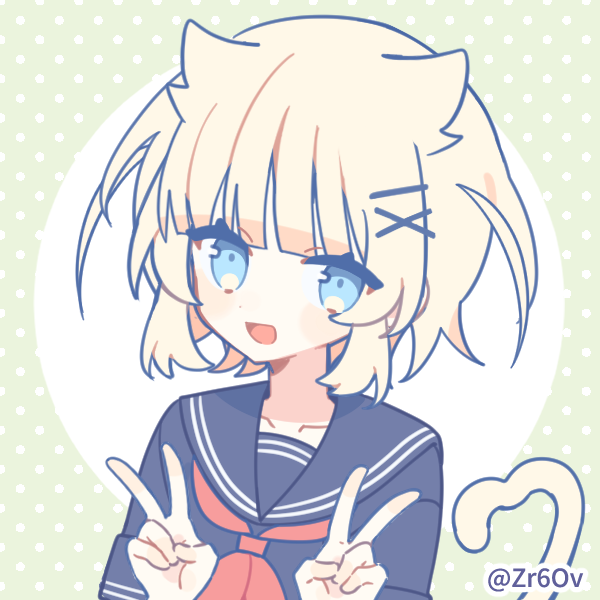

Twitter(メイン垢)
HTML/CSS/JS/Python/C/C++/Scratchができる高専生のメイン垢。
コミュ障を脱したいがなかなかできていない。
たくさん話しかけられると嬉しい。
(ただし返答が確実に返ってくるかは不明...)

HTML/CSS/JS/Python/C/C++/Scratchができる高専生のメイン垢。
コミュ障を脱したいがなかなかできていない。
たくさん話しかけられると嬉しい。
(ただし返答が確実に返ってくるかは不明...)
メイン垢に対してのサブ垢。超雑多/病み垢。
鍵垢。フォロリクは基本通すけど通さない場合もあり。
GitHubアカウント。まだリポジトリは少ないがそのうち増やしていく。
匿名メッセージはこちらから。
返信めちゃくちゃ遅いかもしれないのはご了承願います。
4年くらいやってるやつ。すごい作品まだ一つしか作って無い()
任意精度電卓、3ヶ月くらいめちゃくちゃ頑張って作った!
見てほしい()
鯖主がコミュ障すぎたり過疎だったり。まあ頑張って話してるところ。
風止渚のDiscord個人垢。話しかけるときは「風止渚のホームページのリンクから来ました」とか言ってもらえると嬉しい。 ただコミュ障過ぎるので返答が返ってくる可能性は低いかもしれません。
まだまともなコンテンツはない()
まくろだったり newline_crlf だったりする人のホームページ
まだコンテンツは少ないけどそのうち増やしていく。